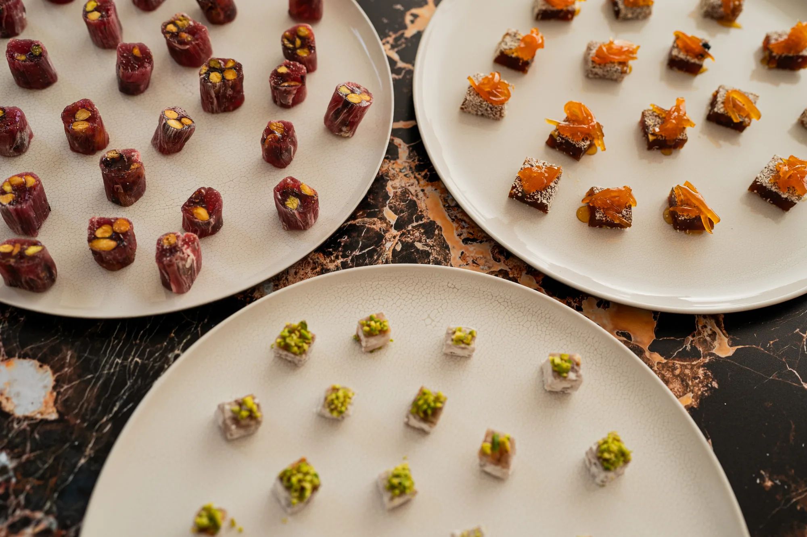

1066
11th C. England · 6 Courses
The Norman Conquest
England's first court cuisine: forest game, spiced meats, and flowing wine.
Pictured Dish From MenuVenison with duck liver

Historical Private Dining · London

Chef Josh grew up across Cantonese, Shanghainese, Egyptian, Russian, Dutch and British kitchens, cooking since age 10. Each evening focuses on one complete 6-course banquet from a single era, cooked fresh in your kitchen.
"Everything I ate was new and I enjoyed every bite." — Ming guest, N. London
Private homes across London & Greater London, or limited dates in our N10 garden venue.

Scan to see every course inside each banquet menu.
England's first court cuisine: forest game, spiced meats, and flowing wine.

Ayyubid royal hospitality with spit-roasts, saffron pilafs, and rose water.

Imperial palace artistry contrasted with bold provincial Chinese flavours.

The Columbian Exchange in full: from European shores to Tenochtitlan.

Imperial Slavic estate classics fused with meticulous French haute cuisine.

1. Pick one menu or any period.
2. In-person kitchen & dietary visit.
3. Live storytelling & spotless cleanup.